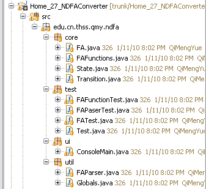
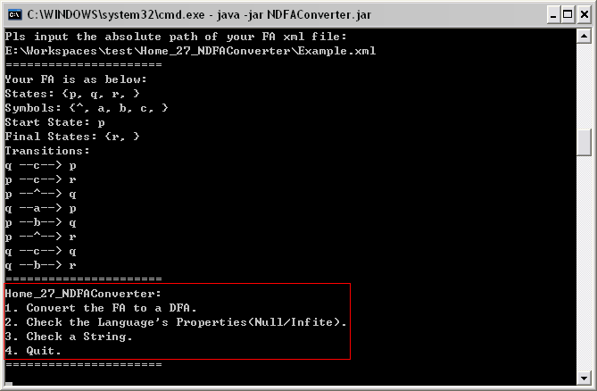
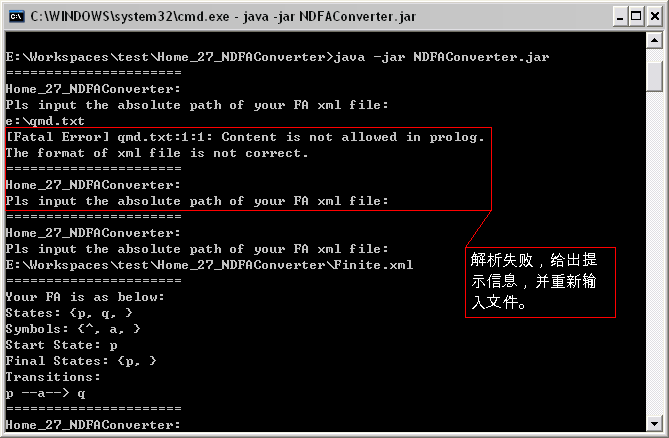
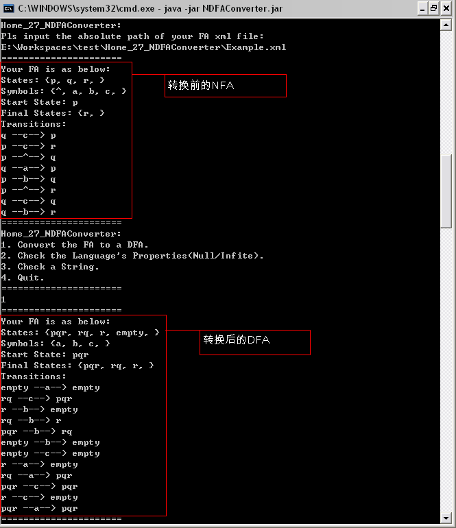
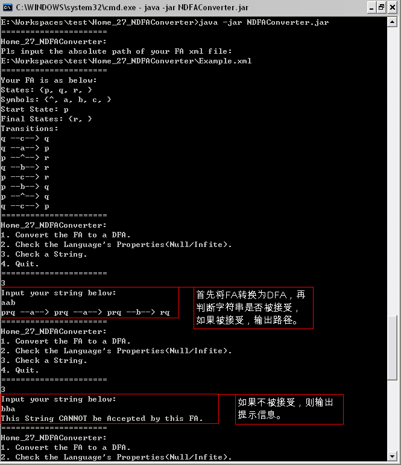
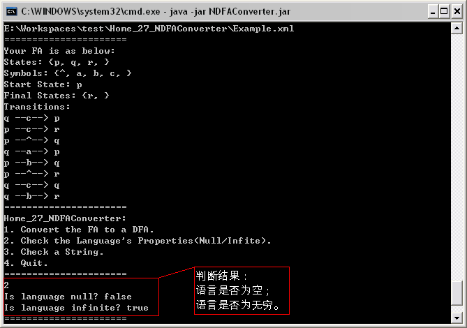
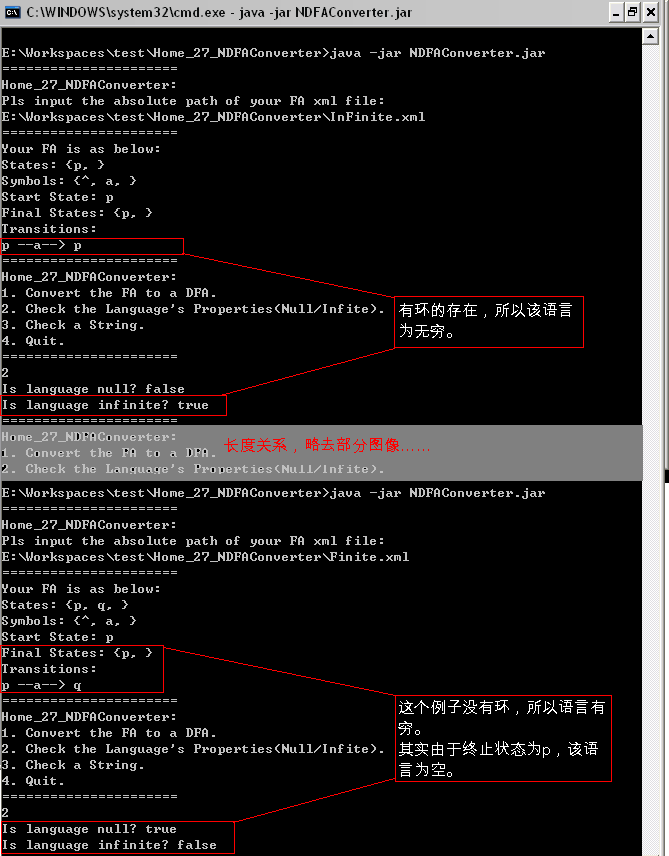

Current version: 0.9
1. Project is encoding by UTF-8.
2. This program is distributed under EPL.
3. This java project is built under eclipse v3.5.
4. The DTD file for NFA&DFA, named autoDS.dtd, is from Project 12AutomataModeling.
5. Usage: java -jar NDFAConverter.jar
1. 联系方式
| 学号 | 姓名 | 联系方式 |
| 2008212572 | 祁梦月 | qimengyue@gmail.com |
2. 算法简述
程序的算法比较简单：
* 对于NFA到DFA的转换，按照教材给出的方法，首先得到每个状态的E-closure备查，将开始状态的E-closure作为DFA的开始状态，遍历所有的输入字符，得到相应的变迁关系，并将新出现的状态加入到DFA的状态集中；对DFA状态集中的所有状态重复上一动作。在过程中遇到包含有NFA结束状态的状态时，将其添加至DFA的结束状态集中。
* 对于语言为空的判断，在DFA的基础上，判断初始状态是否可以达到结束状态，如果可以，则不为空；不可以则为空。
* 对于语言为无穷的判断，在DFA的基础上，判断是否有环，如果有，则为无穷；没有则有穷。
* 对于字符串是否被接受，在DFA的基础上，按照字符串给出的字符顺序，从开始状态开始迁移，如果能达到结束状态，则可以接受；不能则不被接受。
3. 代码介绍
程序的代码按照功能分为四个包，结构如下图：

* 其中，core包中是程序的核心，FA、State、Transition三个类分别定义了自动机及其状态、变迁的结构，FAFunction则定义了自动机的相关操作。
* ui包包含了程序有关用户操作的相关功能，目前只实现了从控制台操作的部分。
* util包则包含程序的辅助功能，目前包括从xml文件解析FA结构的FAParser类和一些全局常量。
* test包则是使用JUnit对程序进行测试的一些类。
4. 相关度量值
利用源代码统计工具(SourceCounter)V2.5.5.9统计代码行，在编程中利用Hourglass V0.7.3.alpha统计工作时间：
| 代码行数(行) | PSP0文档(个) | 工作时间(小时) | 配置文件(个) |
| 747 | 4 | 14.07 | 1 |
5. 完成情况对比
程序主菜单截图如下：

作业要求与完成情况对比如下：
| 要求 | 完成 |
| 用Java编写，保证可扩展性。 | Java编写 |
| 检查某个字符串是否被指定的自动机接受。 | 实现，对应程序菜单第3项 |
| 判断语言是否为空，是否为无穷。 | 实现，对应程序菜单第2项 |
| 实现NFA到DFA的相互转换。 | 实现，对应程序菜单第1项 |
6. 测试用例说明
程序采用控制台交互菜单的方式操作，输入描述自动机的xml文件的绝对路径，解析成功后即可按照菜单提示进行相应操作；解析失败也有相应提示：

* 对教材第80页习题2.5.2的测试，对应xml文件为Example.xml，下图为NFA到DFA的转换：

* 下图示例仍为习题2.5.2，对指定字符串是否可以被接受的测试：

* 仍对习题2.5.2测试，判断其是否为空，是否为无穷：

* 对语言是否为空、是否无穷的判断，有两个最简单的例子Finite.xml和InFinite.xml：

7. 自我评价
90 -- 中规中矩的完成